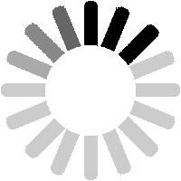

JAVA BO'LIM

Yuklanmoqda...
Diqqat!
Bu sahifadagi barcha
ma'lumotlar
faqat "JAVA" (Symbian operatsion sistemasi) tizimida ishlovchi telefonlar uchun mo'ljallangan.
Masalan:
Nokia 6300 ©
Java dasturlarni tarjima qilish
Nokiada tema yaratish
Nokiada "NDGE" kitob yaratish
Nokia o'yinlarni bluetooth orqali ko'chirish
Copyright 2020-2021 ©
All rights reserved